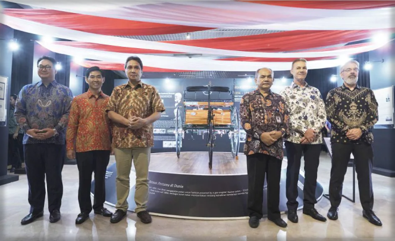

Jakarta. 50 years of Mercedes-Benz in Indonesia: this year the success story of Mercedes-Benz continues with the golden anniversary of the local assembly plant and the business unit Merci Indonesia. As the pioneer of mobility in Indonesia, Mercedes-Benz has reached many milestones during its presence of over 125 years in the country. As a symbol of contribution to mobility in Indonesia, Merci donates a replica of the world’s first car, the Benz Patent-Motorwagen (Benz Patent Motor Car) to the Museum Nasional Indonesia (Indonesia National Museum). From 8 to 15 February 2020, the Benz Patent-Motorwagen will be displayed at the temporary exhibition “The journey to 50 years of success of Merci in Indonesia” at the Indonesia National Museum.
